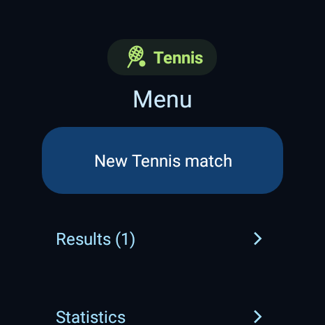
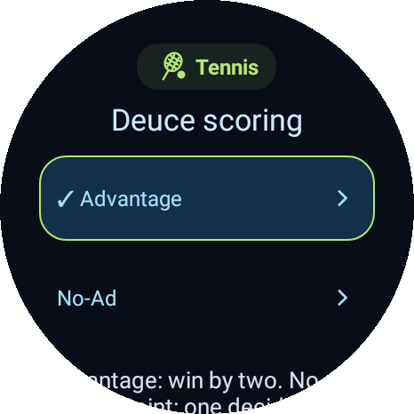
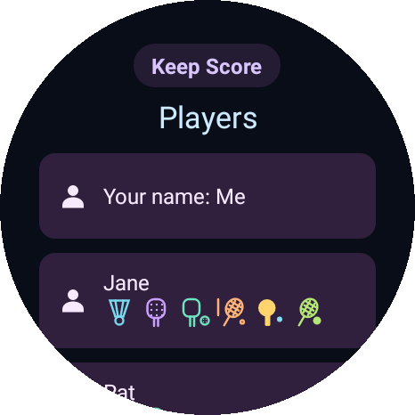
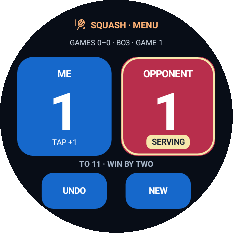
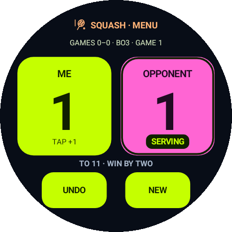
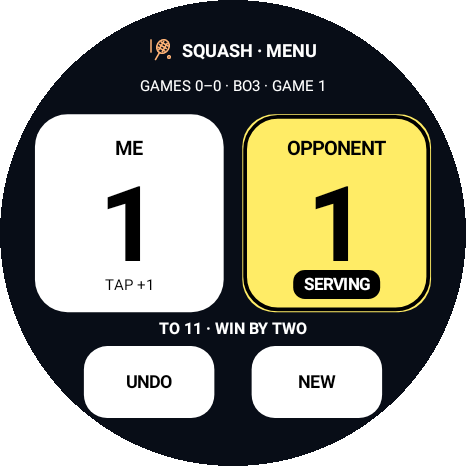

01 Know where you are
Your sport has its own icon and colour. Finish or cancel the current match before switching, even when it is paused.
Six racket sports · Wear OS
Squash, tennis, badminton, padel, table tennis and pickleball, right on your wrist. Separate results for every sport. One shared list of players.
v0.16.1 Watch APK
Install using your Android phone. Currently distributed by APK.
Your sport. Your format.
Pick the format you play. Each match keeps its own scoring rules, including the older and newer options.
| Sport | Players | Scoring options |
|---|---|---|
| SquashSingles | Singles | 11 points · win by two · best of 3 or 5 |
| TennisSingles & doubles | Singles & doubles | Advantage or No-Ad · optional deciding match tie-break |
| BadmintonSingles & doubles | Singles & doubles | 21 points, cap 30 · or 15 points, cap 21 |
| PadelDoubles | Doubles | Advantage, Golden Point or Star Point |
| Table tennisSingles & doubles | Singles & doubles | 11 points · win by two · best of 3, 5 or 7 |
| PickleballSingles & doubles | Singles & doubles | Traditional side-out · Rally 2025 / 2026 · 11, 15 or 21 points |
Tap the rally winner. Undo a mistake. In traditional pickleball, some rallies change service without adding a point. Optional serving guidance follows the score, without recording serve attempts, lets or strokes.
Made for the watch
Large controls, recognisable sport colours and menus that keep you oriented. Choose Classic, Neon Lime or high-contrast Sunlight scoreboard colours. Brightness follows your watch settings.

Your sport has its own icon and colour. Finish or cancel the current match before switching, even when it is paused.

See scoring, mode and match-length options together. The current choice is marked. Back keeps your place.

Keep opponents and partners in one list. Sport badges show where each person already has saved results.
App previews use example data. Playing and saving results work offline.
The next server, at a glance.A dedicated serving badge and highlighted score card stay clear with missing or long player names. Doubles show the serving role; known service information also appears in the ambient view.
Browse scores, recorded times and duration. Filter by player or date and see sport-specific wins, losses and totals.
Enter a completed set or add a separate past match with score wheels and presets. No tiny keyboard needed for scores.
View results, edit names and import or export CSV through a temporary QR link in your phone browser.
Quick rematch reuses the players and rules. Save favourite formats, set your own name and open the match from a watch tile or face complication.
Download a complete backup through your phone browser: every sport, players, settings, favourites and your current match with Undo. Restores are reviewed on the watch.
Start optional live sharing from Current match. Share a read-only website link with your audience. Scoring continues offline and the latest score catches up when the connection returns.



Get onto the court
The app runs on your Wear OS watch. Your phone helps with the installation.
Open Settings → Check for updates on the watch. You can also install the latest official APK over your existing app using Wear Installer 2. Keep the app installed to retain your local history.
No. Scoring, player names and saved results work on the watch without an account or internet connection. Optional phone transfers need internet on both devices.
Use Match options → Save retirement result to record a win/loss with the scores played. Or choose Current match → Cancel match → Discard match to quit without a result or statistics entry. Saved history and names are kept.
Open Results → Options for results and CSV, or Players → Edit names on phone for names. Choose Show phone QR and scan it with your phone camera. Changes are reviewed on the watch before you apply them.
Your watch, your records
Scores and names stay on your watch unless you start an optional phone transfer or live scoreboard. Transfers are encrypted, last ten minutes and use a private QR link. Live scoreboards share only that match’s score and names through a separate audience link, expiring after eight hours. There is no public list of matches or transfers.
Keep the QR code and full link private. Anyone with the complete active link can open that transfer. End transfer closes access early. Downloaded CSV, backup and result-card files stay on your phone until you remove them. Stopping live sharing closes its audience link when the watch can reach the service; an offline link remains available until it expires.